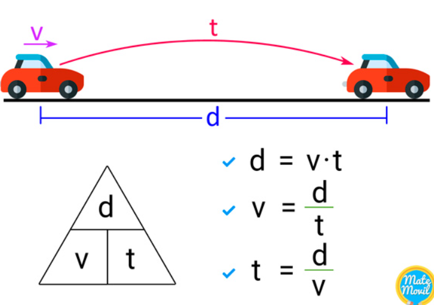
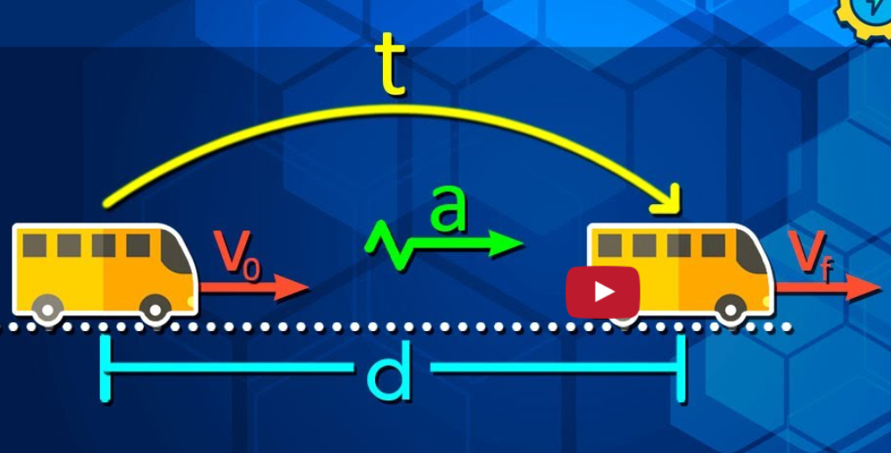

Estudio del MRU y MRUV
Estudio del MRU y MRUV 
El Movimiento Rectilíneo Uniforme (MRU) es un tipo de movimiento en el que un objeto se desplaza en una línea recta con velocidad constante. Esto significa que recorre distancias iguales en intervalos de tiempo iguales, sin cambios en su velocidad ni dirección.
• Velocidad constante: La rapidez del objeto no varía.
• Trayectoria rectilínea: El objeto se mueve en línea recta.
• Aceleración nula: No hay cambios en la velocidad, por lo que la aceleración es cero.
El Movimiento Rectilíneo Uniformemente Variado (MRUV) es un tipo de movimiento en el cual un objeto se desplaza en línea recta, pero con una aceleración constante. Esto significa que la velocidad del objeto cambia de manera uniforme con el tiempo.
• Aceleración constante: La velocidad del objeto varía linealmente con el tiempo.
• Trayectoria recta: Al igual que en el MRU, el movimiento se realiza a lo largo de una línea recta.
Haz clic en el ícono para ver los temas.


Haz clic en la imagen para ver los ejemplos y videos
Haz clic en la imagen para ver los ejemplos y videos
